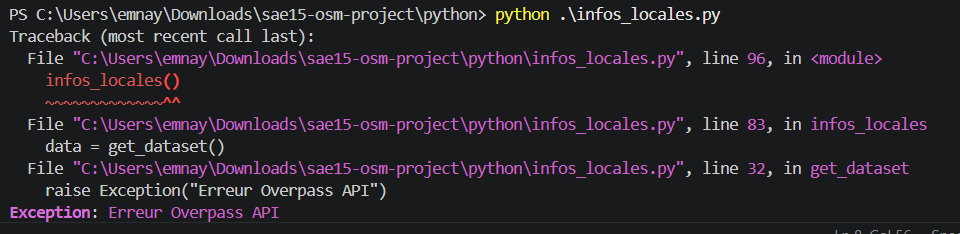
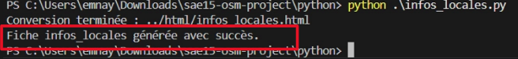
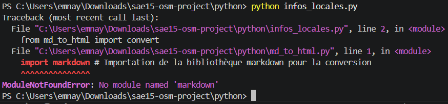
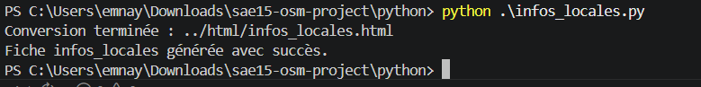

Introduction
Dans le cadre de la SAÉ15, j’ai développé plusieurs scripts Python permettant de récupérer des données OpenStreetMap via l’API Overpass afin de générer automatiquement des fichiers HTML contenant des informations géographiques.
Lors des tests du programme, différents problèmes techniques empêchaient le bon fonctionnement des scripts Python ainsi que la génération correcte des pages HTML.
Apprentissages Critiques (AC)
- AC13.01 — Utiliser un système informatique et ses outils
- AC13.02 — Lire, exécuter, corriger et modifier un programme
- AC13.03 — Traduire un algorithme dans un langage de programmation
- AC13.06 — S’intégrer dans un environnement propice au développement et au travail collaboratif
Preuve 1 — Les données OpenStreetMap ne s’affichaient plus
Apparition du problème
Lors de l’exécution du script Python :
le programme retournait une erreur et aucun fichier HTML n’était généré correctement.
Figure 1 — Erreur lors de la récupération des données Overpass API.

Analyse du problème
Après analyse du script Python, j’ai constaté qu’une erreur était présente dans l’URL utilisée pour contacter l’API Overpass.
L’adresse :
avait été modifiée incorrectement, empêchant la communication avec le serveur OpenStreetMap.
Le problème provenait donc de la requête API et non du traitement des données Python.
Résolution du problème
Pour corriger cette erreur, j’ai restauré la bonne URL de l’API Overpass dans le script Python.
Après correction, les données JSON ont été récupérées correctement et les fichiers HTML ont été générés sans erreur.
Figure 2 — Génération correcte des données HTML après correction de l’URL API.

Preuve 2 — Erreur lors de l’import du module Python markdown
Apparition du problème
Lors de l’exécution du programme :
une erreur Python apparaissait immédiatement dans le terminal :
Le programme s’arrêtait avant la génération des fichiers HTML.
Figure 3 — Erreur d’import du module Python markdown.

Analyse du problème
Après analyse du script Python, j’ai constaté que le projet utilisait la bibliothèque :
pour convertir des fichiers Markdown en HTML.
Cependant, cette bibliothèque n’était pas installée sur l’environnement Python utilisé pour le projet.
Le problème provenait donc d’une dépendance Python manquante.
Résolution du problème
Pour corriger cette erreur, j’ai installé le module Python nécessaire avec la commande suivante :
Après installation du module, le script Python a pu s’exécuter correctement et les fichiers HTML ont été générés sans erreur.
Figure 4 — Génération correcte des fichiers après installation du module.

Autoévaluation
Cette SAE m’a permis de mieux comprendre le fonctionnement d’un projet Python utilisant des API et des bibliothèques externes.
À travers ces manipulations, j’ai appris à analyser des erreurs techniques, identifier leur origine puis appliquer une solution adaptée afin de rétablir le bon fonctionnement du programme.
Ce travail m’a également permis de progresser dans l’utilisation des modules Python, la gestion des dépendances avec pip ainsi que la génération automatique de pages HTML.